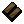

インゴットのリサイクル
鍛冶スキルで作成できる装備品は、作成メニューの「アイテムを溶かす」を使うことでインゴットに戻すことができます。 インゴットの再生量は、同じアイテムを溶かした場合、Mining（採掘）スキルが高いほどより多くなります。
１．インゴットへの戻し方
smith's hammerなどの鍛冶道具で作成メニューを開き、「
アイテムを溶かす
」を選ぶ。
インゴットへ戻したい装備品にカーソルを合わせる。
インゴットへ戻せる装備品であれば、インゴットに戻る。
注意
インゴットに戻せる装備品は、鍛冶スキルで生産できる装備品のみで、pitchforkやlong sword（細身タイプ）はインゴットに戻せない。
Dragon Barding Deed（沼ドラゴン用の鎧Deed）は、Publish57中の更新でインゴットに戻せなくなった。
NPCから購入した装備品をリサイクルしても、Iron ingot1個にしかならない。
bone macheteや上級レシピ品はインゴットに戻せない。
salvage bag（リサイクル用の袋）を使用した一括リサイクルが導入されました。
使い方などについては、「
３．salvage bagについて
」で解説します。
２．インゴットの再生量
インゴットの再生量は、以下の要素が影響します。
自分のMining（採掘）スキル
アイテム作成に必要なインゴットの数
インゴットに戻す装備品の耐久度（現在耐久値と最大耐久値の比です）
また、特殊なインゴットで作成された装備品をインゴットに戻すとき、それを
採掘・精製可能なスキル
がなければインゴットに戻すことができません。
なお、素材の色を反映しないで作成した装備品でも、使用したインゴットが戻ります。
dullcopper
・・・65.0以上
shadow
・・・70.0以上
copper
・・・75.0以上
bronze  ・・・80.0以上
gold
・・・85.0以上
agapite
・・・90.0以上
verite
・・・95.0以上
valorite
・・・99.0以上
インゴットの再生量は、下の式で計算できますので参考にしてください。
再生量＝[作成に必要なIngot数]×（0.0066×Miningスキル）×（耐久度0〜100％）
３．salvage bagについて
salvage bagはその中に入っているアイテムを一括して再生することができる袋です。
（１）販売場所
salvage bagはNPCのProvisionerが1255gp（Trammel価格）で販売しています。
（２）使い方
salvage bagにリサイクルしたいアイテムを入れる。画像ではgold ingotで作成したwar forkが6本入っている。
鍛冶道具（smith's hammer／sledge hammer／tong）をバックパックの1層目に入れて、鍛冶作業ができる場所に立つ。
salvage bagを左クリックして、"salvage ingots"を選択する。
KRクライアントでは、salvage bagを右クリックすると設定画面が表示される。
Miningスキルにより決まった量のインゴットがバックパックに入ります（
２．インゴットの再生量
参照）
（３）注意？
アイテムのリサイクル量は採掘スキルに依存していますが、Salvage Bagでリサイクルしたとき、1アイテムにつき1ingotだけリサイクル量が多くなる。
４．インゴットの再生量計算
で計算した再生量に＋1される。
４．インゴットの再生量計算
Mining（採掘）スキル＝
での再生量は下の表にまとめています。
上の入力欄に採掘スキルを入れてください。
鍛冶製品
作成時
必要材料
Mining
での再生量
最大値
必要スキル
dagger
×3
×
×2
skill ： 102
shuriken
×5
×
×3
skill ： 91
circlet
royal circlet
gemmed circlet
short spear
mace
×6
×
×4
skill ： 102
tear kite shield
cutlass
katana
kryss
wakizashi
×8
×
×5
skill ： 96
assassin spike
×9
×
×6
skill ： 102
ringmail gloves
chainmail coif
platemail gorget
buckler
bone harvester
broadsword
scimitar
maul
scepter
×10
×
×6
skill ： 91
platemail gloves
bronze shield
longsword
tekagi
sai
leafblade
double axe
large battle axe
bladed axe
pike
spear
war fork
×12
×
×8
skill ： 102
ringmail sleeves
metal shield
cresent blade
viking sword
kama
elven spellblade
elven machete
axe
battle axe
executioner's axe
scythe
war mace
×14
×
×9
skill ： 99
bascinet
close helm
helmet
norse helm
platemail helm
daisho
radient scimitar
rune blade
×15
×
×10
skill ： 102
ringmail leggings
platemail horo sode
metal kite shield
two handed axe
war axe
double blade staff
hammer pick
war hammer
×16
×
×11
skill ： 105
ringmail tunic
chainmail leggings
platemail arms
platemail mempo
no-dachi
ornate axe
bardiche
×18
×
×12
skill ： 102
chainmail tunic
platemail leggings
plate armor
platemail suneate
platemail haidate
chainmail hatsuburi
platemail hatsuburi
heavy platemail jingasa
light platemail jingasa
small platemail jingasa
halberd
lance
diamond mace
×20
×
×13
skill ： 99
platemail
decorative platemail kabuto
platemail battle kabuto
standard platemail kabuto
chaos shield
order shield
lajatang
×25
×
×17
skill ： 104
platemail do
×28
×
×19
skill ： 103
 ・・・65.0以上
・・・65.0以上 ・・・70.0以上
・・・70.0以上 ・・・75.0以上
・・・75.0以上 ・・・85.0以上
・・・85.0以上 ・・・90.0以上
・・・90.0以上 ・・・95.0以上
・・・95.0以上 ・・・99.0以上 ・・・65.0以上 ・・・70.0以上 ・・・75.0以上 ・・・85.0以上 ・・・90.0以上 ・・・95.0以上 ・・・99.0以上
・・・99.0以上 ・・・65.0以上 ・・・70.0以上 ・・・75.0以上 ・・・85.0以上 ・・・90.0以上 ・・・95.0以上 ・・・99.0以上